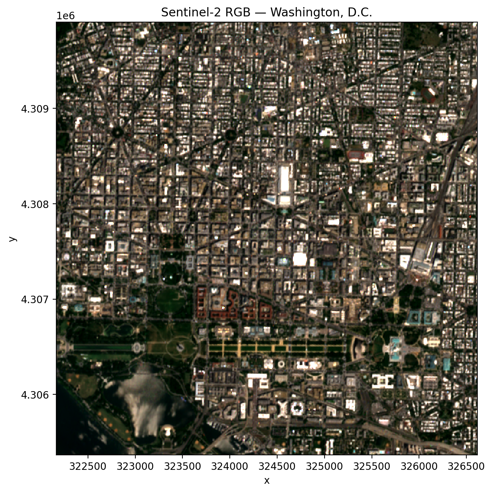

Learning Objectives
Understand what a STAC catalog is and why it matters for remote sensing
Stream Sentinel-2, Landsat, and HLS imagery directly into Python without downloading
Apply automatic cloud masking to STAC queries
Build cloud-free temporal composites (monthly, quarterly, etc.)
Merge imagery from multiple sensors into a single time series
Accessing STAC Imagery with GeoWombat#
Not long ago, working with satellite imagery meant downloading enormous files, wrestling with sensor-specific folder structures, and hoping your hard drive could keep up. For a single Landsat scene that might be several gigabytes; for a year of Sentinel-2 over a small study area, easily hundreds. Most of those bytes were pixels you never actually needed.
The SpatioTemporal Asset Catalog (STAC) specification changes the workflow. A STAC catalog is a standardized, queryable index of spatial-temporal data hosted in the cloud. Instead of downloading whole scenes, you describe the imagery you want — by bounding box, date range, and cloud cover — and stream just the bytes that overlap your study area directly into an xarray.DataArray. The data stay in the cloud; only the pixels you request cross the wire.
GeoWombat wraps this process in a single function, open_stac, so you can go from “I want Sentinel-2 over Washington, D.C. last summer” to an analysis-ready, lazily-loaded DataArray in a handful of lines.
Note
STAC access in GeoWombat requires a few extra dependencies. Install them with:
pip install "geowombat[stac]"
This pulls in pystac, pystac_client, stackstac, and planetary_computer.
What is a STAC catalog?#
Think of a STAC catalog as a library card catalog for satellite imagery. Every “book” (called an item) is a scene with standardized metadata: when and where it was captured, which sensor produced it, how cloudy it is, and where each band lives as a separate Cloud-Optimized GeoTIFF (COG). Because the metadata is standardized, you can query many catalogs the same way.
Several public STAC catalogs are supported out of the box:
Catalog |
What it hosts |
|---|---|
|
|
|
|
|
|
|
|
Each catalog has slightly different coverage, latency, and rate limits, but the GeoWombat API is the same across all of them.
Your first STAC query: streaming Sentinel-2#
Let’s start with the workhorse of open-access optical imagery: Sentinel-2 Level 2A (atmospherically corrected surface reflectance), served by Element 84. The live query below grabs the blue, green, and red bands over a small window around Washington, D.C., for June–July 2023, keeping only scenes with less than 10% cloud cover.
The only bit of bookkeeping worth highlighting is epsg. STAC scenes may be stored in many UTM zones; open_stac reprojects everything to the EPSG code you pass in so the returned DataArray has a single, consistent CRS. For D.C., UTM Zone 18N (EPSG:32618) is the natural choice.
from geowombat.core.stac import open_stac
data, df = open_stac(
stac_catalog="element84_v1",
collection="sentinel_s2_l2a",
bounds=(-77.05, 38.88, -77.00, 38.92), # small DC window (lon/lat)
epsg=32618, # UTM Zone 18N
bands=["blue", "green", "red"],
cloud_cover_perc=10,
start_date="2023-06-01",
end_date="2023-07-31",
resolution=10.0,
chunksize=1024,
max_items=1,
)
print(data)
Searching element84_v1 for sentinel_s2_l2a...
Found 1 items.
<xarray.DataArray 'stackstac-838dcd8abe6665e31911ab86333b182c' (time: 1,
band: 3,
y: 454, x: 445)> Size: 5MB
array([[[[ 383., 354., 384., ..., 2940., 5772., 9720.],
[ 360., 334., 388., ..., 5428., 5724., 9648.],
[ 384., 376., 388., ..., 8928., 2480., 1816.],
...,
[ 502., 495., 524., ..., 708., 435., 1744.],
[ 528., 505., 504., ..., 500., 535., 1162.],
[ 536., 517., 511., ..., 625., 612., 420.]],
[[ 596., 390., 456., ..., 3308., 5612., 8104.],
[ 404., 388., 548., ..., 5996., 5280., 8504.],
[ 475., 537., 554., ..., 9632., 3018., 2244.],
...,
[ 556., 543., 531., ..., 884., 632., 1908.],
[ 579., 558., 542., ..., 668., 735., 1328.],
[ 564., 575., 550., ..., 770., 750., 598.]],
[[ 319., 275., 274., ..., 3984., 5092., 6872.],
[ 278., 237., 294., ..., 6388., 5992., 7368.],
[ 266., 271., 302., ..., 10704., 4028., 2378.],
...,
[ 377., 368., 364., ..., 798., 616., 1768.],
[ 430., 383., 360., ..., 534., 620., 1338.],
[ 444., 398., 374., ..., 622., 552., 478.]]]])
Coordinates: (12/14)
* time (time) datetime64[ns] 8B 2023-06-02T16:12:23.667000
id (time) <U24 96B 'S2B_18SUJ_20230602_0_L2A'
* band (band) <U5 60B 'blue' 'green' 'red'
* x (x) float64 4kB 3.222e+05 3.222e+05 ... 3.266e+05
* y (y) float64 4kB 4.31e+06 4.31e+06 ... 4.305e+06
proj:shape object 8B {10980}
... ...
title (band) <U20 240B 'Blue (band 2) - 10m' ... 'Red (ban...
raster:bands object 8B {'nodata': 0, 'data_type': 'uint16', 'bits...
common_name (band) <U5 60B 'blue' 'green' 'red'
center_wavelength (band) float64 24B 0.49 0.56 0.665
full_width_half_max (band) float64 24B 0.098 0.045 0.038
epsg int64 8B 32618
Attributes:
spec: RasterSpec(epsg=32618, bounds=(322170.0, 4305360.0, 326620.0...
crs: epsg:32618
transform: | 10.00, 0.00, 322170.00|\n| 0.00,-10.00, 4309900.00|\n| 0.0...
resolution: 10.0
res: (10.0, 10.0)
collection: sentinel_s2_l2a
Two things come back: data is a lazy, dask-backed xarray.DataArray with dimensions (time, band, y, x), and df is a GeoDataFrame describing the individual scenes that went into it (footprints, timestamps, cloud cover, asset URLs). No pixels have actually been downloaded yet — they will be pulled on demand the moment you call .compute(), .plot(), or write to disk.
Note
The bounds argument is always in geographic (lon/lat) coordinates, regardless of the epsg you request for the output. This keeps the query language consistent whether you are working in D.C., Darfur, or Darwin.
Plotting the first timestamp as an RGB composite triggers the actual download and renders the scene:
import matplotlib.pyplot as plt
fig, ax = plt.subplots(dpi=200, figsize=(7, 7))
data.sel(time=data.time[0], band=["red", "green", "blue"]).plot.imshow(
robust=True, ax=ax
)
ax.set_title("Sentinel-2 RGB — Washington, D.C.")
plt.tight_layout(pad=1)
plt.show()

That image came straight off the Element 84 catalog over the network — no scene was ever downloaded to disk. The rest of the examples in this chapter use the same pattern, just with different catalogs, bands, or time windows. They’re shown as plain code blocks so the page builds quickly; swap them to {code-cell} ipython3 if you want to execute them yourself.
Switching catalogs: Landsat from Microsoft Planetary Computer#
Need Landsat instead? Change two arguments. The query pattern is identical because GeoWombat hides the catalog-specific details (asset names, endpoint URLs, sign-in tokens) behind a consistent interface.
from geowombat.core.stac import open_stac
data_l, df_l = open_stac(
stac_catalog="microsoft_v1",
collection="landsat_c2_l2",
bounds=(-77.1, 38.85, -76.95, 38.95),
epsg=32618,
bands=["red", "green", "blue"],
start_date="2023-06-01",
end_date="2023-07-31",
resolution=30.0,
chunksize=512,
max_items=5,
)
print(data_l)
max_items caps how many scenes the query returns — useful when you’re exploring a new area and don’t want to wait for a full year of Landsat to materialize.
Harmonized Landsat Sentinel-2 (HLS)#
Combining Landsat and Sentinel-2 sounds tidy in theory but is painful in practice: different spatial resolutions, different band centers, different BRDF characteristics. NASA’s Harmonized Landsat Sentinel-2 product does the hard work for you, producing BRDF-normalized surface reflectance from both sensors resampled to a common 30 m MGRS grid.
Two collections are available through the nasa_lp_cloud catalog:
hls_l30— Landsat OLI (30 m, ~8-day revisit)hls_s30— Sentinel-2 MSI (30 m, ~5-day revisit)
GeoWombat maps the friendly band names you already know (red, green, blue, nir, etc.) onto the correct HLS asset keys automatically, so the call looks just like the ones above:
data_hls, df_hls = open_stac(
stac_catalog="nasa_lp_cloud",
collection="hls_l30",
bounds=(-77.1, 38.85, -76.95, 38.95),
epsg=32618,
bands=["red", "green", "blue", "nir"],
start_date="2023-06-01",
end_date="2023-07-31",
resolution=30.0,
max_items=5,
)
Cloud masking — the easy way#
Optical imagery without cloud masking is a trap. A beautifully green summer pixel may actually be cloud top, and a “dark” pixel may be cloud shadow. Every sensor ships its own quality band, and every quality band has its own bitmask conventions. Rather than ask you to memorize them, GeoWombat exposes a single switch: mask_data=True.
With mask_data=True, the appropriate QA band is injected into the query automatically, the mask is applied, and then the QA band is dropped from the returned DataArray. You do not need to add qa_pixel or scl to your bands list — in fact, you shouldn’t.
Under the hood, the defaults are sensible for each sensor:
Sentinel-2 — uses the SCL (Scene Classification Layer) and masks
no_data,saturated_defective,cloud_shadow,cloud_medium_prob,cloud_high_prob, andthin_cirrus.Landsat — uses
qa_pixeland masksfill,dilated cloud,cirrus,cloud,cloud shadow, andsnow.HLS — uses
Fmaskand maskscirrus,cloud,adjacent_cloud,cloud_shadow, andsnow_ice.
# Sentinel-2 with cloud masking
data_s2, df = open_stac(
stac_catalog="element84_v1",
collection="sentinel_s2_l2a",
bounds=(-77.1, 38.85, -76.95, 38.95),
epsg=32618,
bands=["blue", "green", "red", "nir"],
start_date="2023-06-01",
end_date="2023-07-31",
cloud_cover_perc=50,
resolution=100.0,
max_items=5,
mask_data=True,
)
If the defaults are too aggressive (or too permissive) for your use case, override them with mask_items:
# Mask only clouds and cloud shadow; keep cirrus and saturated pixels
data, df = open_stac(
stac_catalog="element84_v1",
collection="sentinel_s2_l2a",
bounds=(-77.1, 38.85, -76.95, 38.95),
epsg=32618,
bands=["blue", "green", "red", "nir"],
start_date="2023-06-01",
end_date="2023-07-31",
resolution=100.0,
mask_data=True,
mask_items=["cloud_shadow", "cloud_high_prob"],
)
Temporal composites — cloud-free mosaics over time#
A single Sentinel-2 scene is a snapshot; what you usually want is a composite — a summary of many scenes over a time window that smooths out clouds, shadows, and sensor artifacts. The classic recipe is “take the median of all clear observations within each month.” GeoWombat’s composite_stac wraps open_stac with automatic cloud masking and temporal aggregation so you can do this in one call.
from geowombat.core.stac import composite_stac
# Monthly Sentinel-2 median composite
comp_s2, df = composite_stac(
stac_catalog="element84_v1",
collection="sentinel_s2_l2a",
bounds=(-77.1, 38.85, -76.95, 38.95),
epsg=32618,
bands=["blue", "green", "red", "nir"],
start_date="2023-06-01",
end_date="2023-08-31",
cloud_cover_perc=50,
resolution=100.0,
max_items=20,
frequency="MS", # "month start" — one composite per calendar month
)
print(comp_s2.shape) # (time=3, band=4, y, x) — one per month
Choosing a time frequency#
frequency accepts any pandas offset alias. A few common ones:
Alias |
Description |
|---|---|
|
Daily |
|
Weekly |
|
Biweekly |
|
Monthly (month start) — default |
|
Quarterly (quarter start) |
|
Yearly (year start) |
Multiplied forms such as '15D' (every 15 days) or '2MS' (every two months) work too.
Choosing an aggregation#
agg controls how observations within each time period are combined. The default is median, which is robust to residual clouds the mask may have missed.
Value |
Description |
|---|---|
|
Median (default) — robust to outliers |
|
Mean — sensitive to outliers |
|
Per-pixel minimum |
|
Per-pixel maximum |
# Biweekly mean composite
comp, df = composite_stac(
stac_catalog="element84_v1",
collection="sentinel_s2_l2a",
bounds=(-77.1, 38.85, -76.95, 38.95),
epsg=32618,
bands=["blue", "green", "red", "nir"],
start_date="2023-06-01",
end_date="2023-08-31",
resolution=10.0,
frequency="2W",
agg="mean",
)
Because HLS blends both Landsat and Sentinel-2 observations, it is particularly powerful for composites — you get a denser time series with fewer gaps. Pass collection="hls" and composite_stac will query both hls_l30 and hls_s30 and combine them:
comp_hls, df = composite_stac(
stac_catalog="nasa_lp_cloud",
collection="hls", # queries both hls_l30 and hls_s30
bounds=(-77.1, 38.85, -76.95, 38.95),
epsg=32618,
bands=["blue", "green", "red", "nir"],
start_date="2023-06-01",
end_date="2023-08-31",
resolution=30.0,
frequency="MS",
max_items=20,
)
print(comp_hls.shape) # more observations per period from two sensors
Note
Composites preserve all spatial attributes (crs, res, transform), so you can save the output straight to disk with gw.save(comp, "composite.tif"). Time periods where every pixel is cloudy are dropped from the output automatically.
Merging collections into a single time series#
Finally, if you need to hand-combine sensors rather than rely on HLS — for example, Landsat (30 m) back to the 1980s combined with Sentinel-2 (10 m) from 2015 on — use merge_stac. Each call to open_stac is independent, so you can set resampling and CRS per sensor and then concatenate:
from geowombat.core.stac import open_stac, merge_stac
from rasterio.enums import Resampling
data_l, df_l = open_stac(
stac_catalog="microsoft_v1",
collection="landsat_c2_l2",
bounds=(-77.1, 38.85, -76.95, 38.95),
epsg=32618,
bands=["red", "green", "blue"],
mask_data=True,
start_date="2023-01-01",
end_date="2023-12-31",
resolution=30.0,
)
data_s2, df_s2 = open_stac(
stac_catalog="element84_v1",
collection="sentinel_s2_l2a",
bounds=(-77.1, 38.85, -76.95, 38.95),
epsg=32618,
bands=["blue", "green", "red"],
resampling=Resampling.cubic,
mask_data=True,
start_date="2023-01-01",
end_date="2023-12-31",
resolution=30.0, # resample Sentinel-2 to match Landsat
)
stack = merge_stac(data_l, data_s2)
print(stack)
The result is a single DataArray sorted in time, ready for band math, extraction, or machine-learning pipelines covered in the rest of this section.
Wrapping up#
STAC turns the question “how do I get imagery?” into “what do I want?” Combined with GeoWombat’s consistent interface, cloud masking, and compositing, you can go from a bounding box on a map to a clean, analysis-ready time series in a single cell of code — no downloads, no sensor-specific boilerplate, and no hand-rolled QA bitmasks.